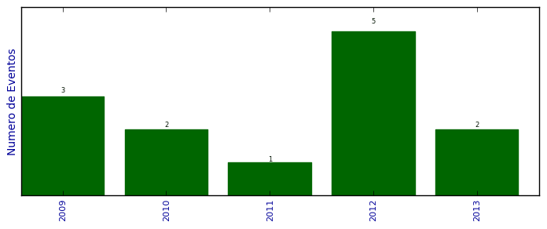

Total de participação em eventos

Número total de itens: 13
2013
| 1. | VI WORKSHOP EM NANOCIÊNCIAS. 2013. (Congresso). |
| 2. | X-MEETING BSB 2013. 2013. (Simpósio). |
2012
| 1. | VI Congresso Sul brasileiro de Computação. Mineração de dados na predição do tempo de imobilidade de camundongos no teste de nado forçado. 2012. (Congresso). |
| 2. | XI Simpóio de Informática da UNIFRA.APLICAÇÃO DE ÁRVORES DE DECISÃO NA DEFINIÇÃO DAS REGRAS DA EVOLUÇÃO DE FERIDAS. 2012. (Simpósio). |
| 3. | XI Simpóio de Informática da UNIFRA.MAPEAMENTO E IMPLANTAÇÃO DE UMA REDE MESH, UM ESTUDO DE CASO. 2012. (Simpósio). |
| 4. | XI Simpóio de Informática da UNIFRA.UTILIZAÇÃO DOS ALGORITMOS PERCEPTRON MULTICAMADAS E J48 PARA AUXILIAR EM DIAGNÓSTICOS MÉDICOS. 2012. (Simpósio). |
| 5. | XI Simpósio de Informática da UNIFRA. 2012. (Simpósio). |
2011
| 1. | XV SIMPÓSIO DE ENSINO, PESQUISA E EXTENSÃO.Comissão Avaliadora dos trabalhos científicos. 2011. (Simpósio). |
2010
| 1. | APRESENTAÇÃO DO CENSO DA EDUCAÇÃO SUPERIOR 2010. 2010. (Encontro). |
| 2. | XIV SIMPOSIO DE ENSINO, PESQUISA E EXTENSÃO.COMPUTAÇÃO EM NUVEM PARA SIMULAÇÃO DE MATERIAIS AVANÇADOS. 2010. (Simpósio). |
2009
| 1. | IV BRAZILIAN SYMPOSIUM ON BIOINFORMATICS. 2009. (Simpósio). |
| 2. | IV WORKSHOP EM NANOCIÊNCIAS. 2009. (Outra). |
| 3. | XIII SIMPÓSIO DE ENSINO, PESQUISA E EXTENSÃO.APLICAÇÃO DE SUPPORT VECTOR MACHINE NA CLASSIFICAÇÃO DE PADRÕES POSTURAIS EM CRIANÇAS RESPIRADORAS BUCAIS E NASAIS. 2009. (Simpósio). |
(*) Relatório criado com produções desde 2009 até HOJE
Data de processamento: 11/04/2014 20:56:41